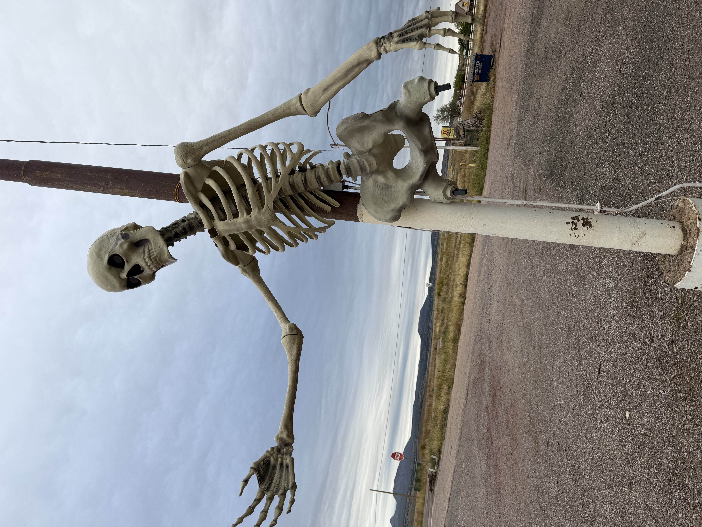
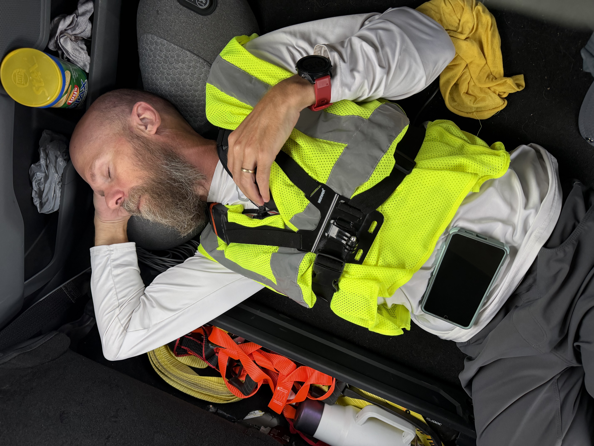
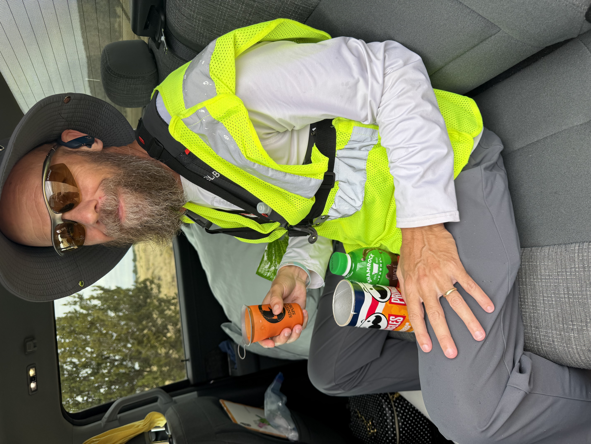

October 18, 2026
Day 9: Seligman west to the mountains"
Day 9 started in Seligman, an adorable town that is Cars themed which was our missionary Peter’s favorite movie as a kid, he loved Lightning The Queen ❤️. So that was fun. He started out where he left off on Route 66 and ran through the town and out into the wilderness. He was able to stay on frontage roads and dirt roads all day which was nice as I was able to stay with him.
He got about halfway to Kingman and ended the day in a high mountain pass.




Comments for This Day